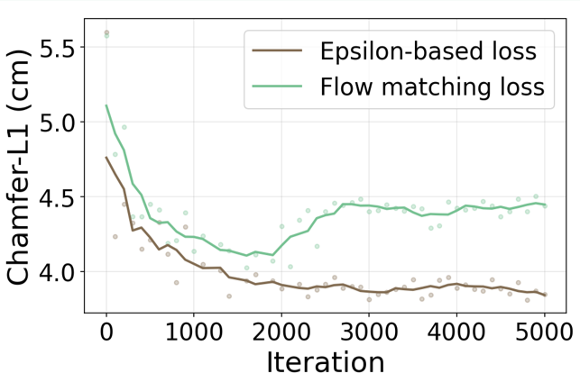
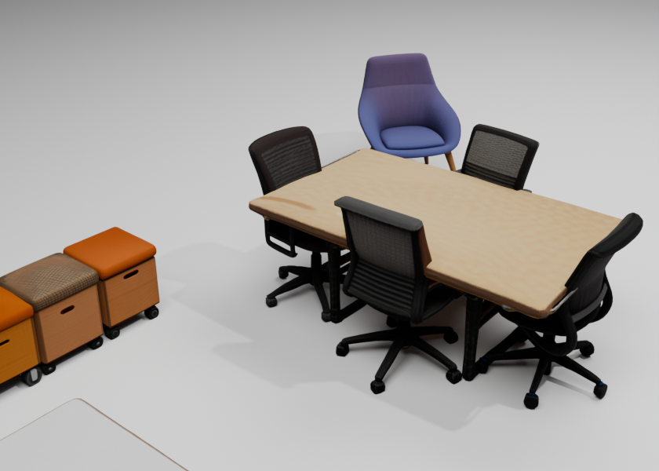
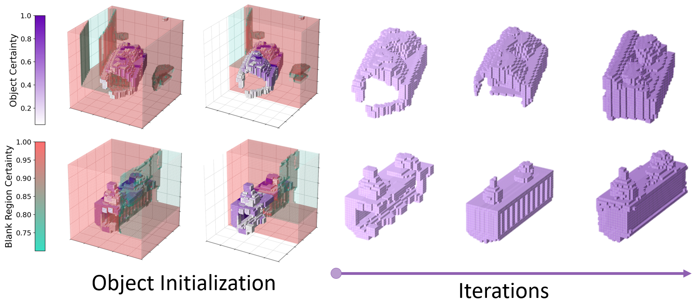
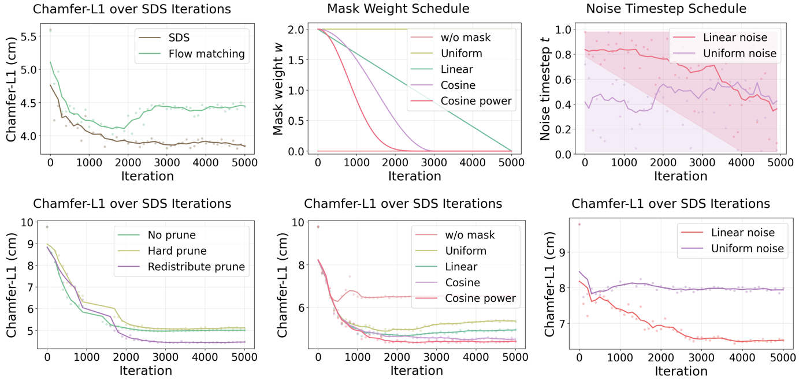

Scene parsing
Recover the layout, background, and object instances from posed observations.
3D scene reconstruction2026
Harnessing 3D-Native Priors with Guided In-situ Denoising Optimization for Decompositional Scene Reconstruction
Abstract / Why it matters
DecomVoxel reconstructs indoor scenes as coherent, object-level assets rather than a single entangled shell.
Starting from posed images, our pipeline decomposes a scene into objects, initializes each component with a strong 3D-native prior, and refines geometry and appearance directly inside the scene. Guided denoising preserves the observed layout while recovering detailed, complete assets.
The result is a high-quality textured mesh with clean topology, geometry, appearance, and background, ready for editing, simulation, and downstream spatial reasoning.

Method / Inside the voxel field
Our optimization stays grounded in the captured scene while 3D-native priors complete what the cameras cannot see.
Recover the layout, background, and object instances from posed observations.
Lift each instance into a structured voxel representation with complete geometry.
Refine geometry and appearance in situ without drifting from the scene evidence.
Merge optimized assets with the reconstructed background into an editable mesh.
Optimization under the microscope
A stable denoising objective steadily improves scene geometry and avoids the late-stage degradation observed with flow matching.

Results / Reconstructed as assets
Complete geometry and rich appearance survive scene-level assembly.


Analysis / What makes it work
The optimization begins with strong structural guidance, then progressively releases the model to resolve local geometry. Scheduled masks, noise, and voxel redistribution each control a different failure mode.

Citation
Paper metadata will be updated when the preprint is released.
@article{decomvoxel2026,
title = {DecomVoxel: Harnessing 3D-Native Priors with
Guided In-situ Denoising Optimization for
Decompositional Scene Reconstruction},
author = {Anonymous Authors},
year = {2026}
}